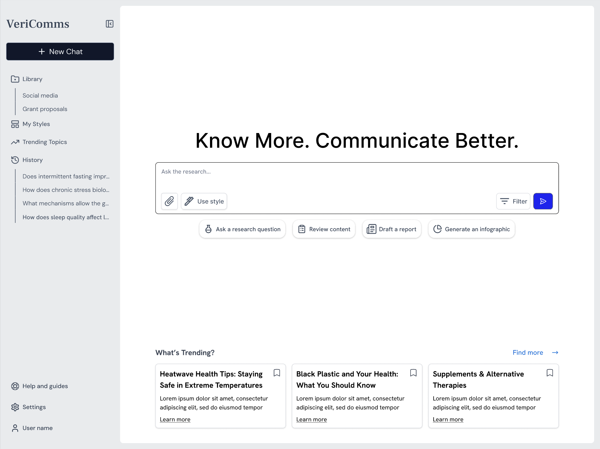
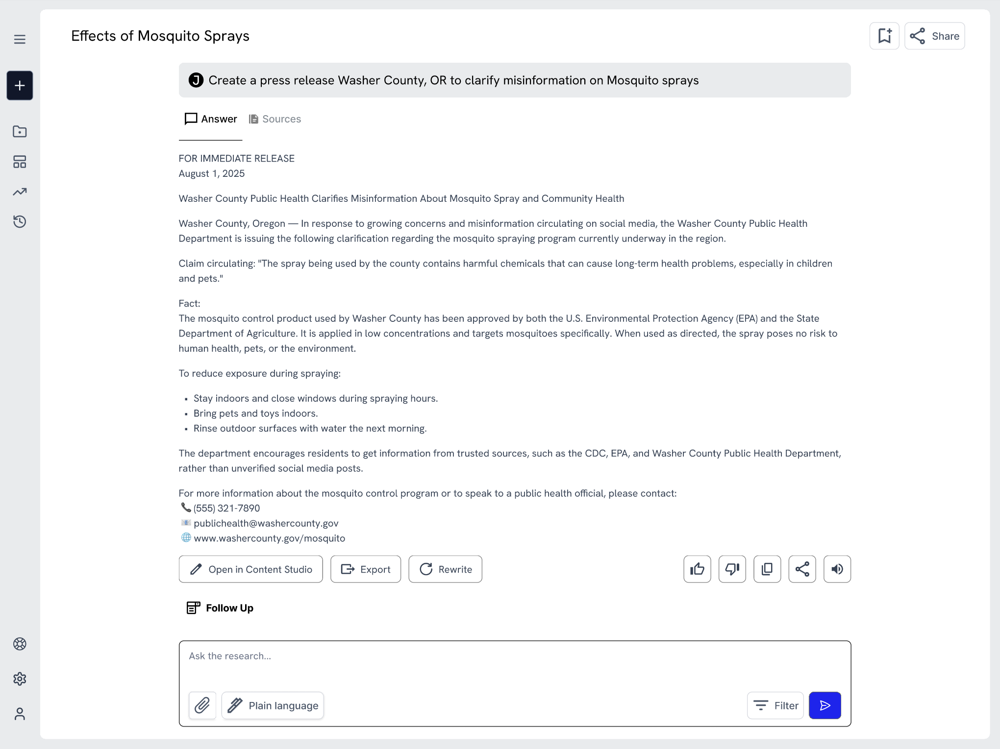
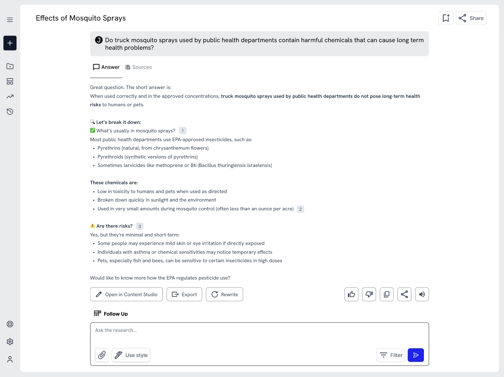
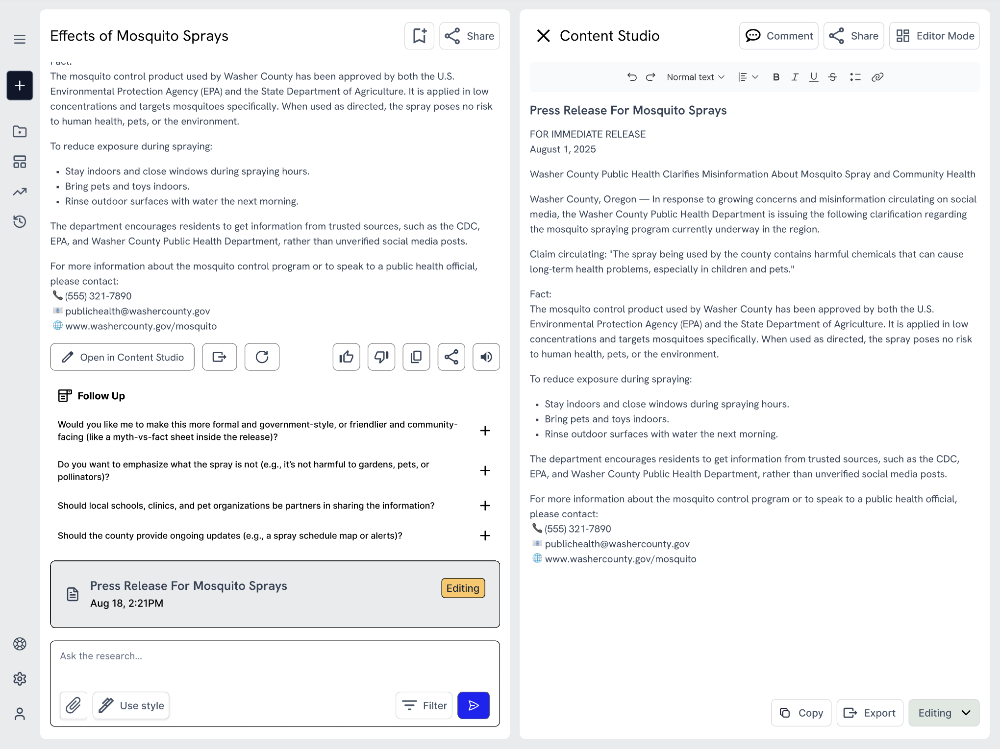
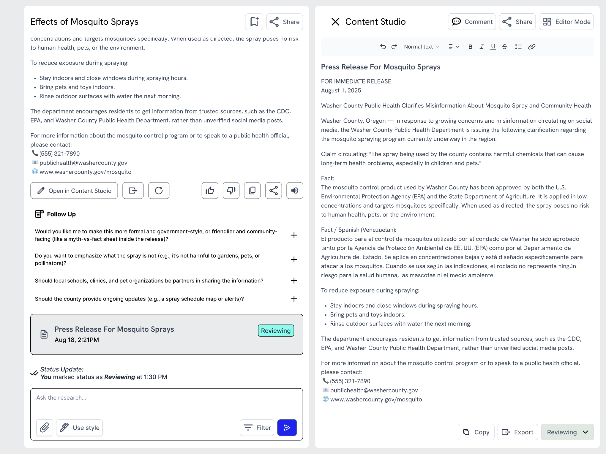

VeriComms
Science to People is building VeriComms, an LLM-powered platform for public health communicators working under tight deadlines and budgets.
Grounded in vetted scientific sources, VeriComms acts as a content assistant and thought partner, helping communicators research, draft,
and verify science-based messaging more efficiently while keeping their own expertise at the center.
As the sole Solutions Architect and technical lead for Phase 2 on a cross-functional team, I helped ground our research and design decisions in how the
underlying LLM actually behaves.
The Problem
Our research showed that public health communicators won't rely on an AI response unless they can verify that reliable sources back it. Their messaging is often sensitive and aimed at culturally diverse audiences, and it typically passes through multiple rounds of expert, managerial, and compliance review before it's published. An AI tool for this audience has to support verification and collaboration, not just fast content generation.From the technical side, that raised a question: what could the underlying LLM realistically support, and where would the design need to compensate?


My Role
Early in the project, the client pivoted from a general-purpose content tool for social media health and science influencers to a white-label product for public health organizations, prompted by interest from a first potential customer. I served as Solutions Architect and technical lead, working alongside researchers, UX designers, product strategists, and writers to keep our decisions grounded in how the underlying LLM actually behaved.I tested the client's existing experimental LLM, evaluating how prompts specifying audience education level and scientific terminology shaped its output, and flagged feasibility constraints such as multilingual output so research and design decisions stayed grounded in how the system behaved. I also estimated the technical effort behind proposed features, including an importance-versus-effort matrix that showed translation was highly valued by users but demanding to build.
To make the technical side accessible, I created architecture visuals and logic flows, including a walkthrough of the client's tech stack, and helped teammates new to AI understand LLM and machine learning fundamentals so the whole team could make informed decisions.
With limited access to the client's developers, I focused on what I could evaluate directly: the behavior of the experimental model.



Contributions
- Translated the technical side of the product for a team new to AI through architecture visuals, logic flows, and coaching on LLM and ML fundamentals.
- Tested the client's existing experimental LLM, exploring how prompts specifying audience education level and scientific terminology shaped its output, to give researchers and designers a technical foundation for prototype iterations.
- Built an importance-versus-effort matrix to help the team weigh trade-offs when prioritizing features.
- Advised limiting AI-generated imagery to basic shapes and graphics rather than generated photos, to protect scientific accuracy and the platform's credibility. This echoed feedback from interviewed participants who felt generated photos didn't reflect their audience and came across as inauthentic.
- Gave technical feedback on prototype design and functionality.
Key Insights
- Translation needed deliberate scoping. Users valued it highly, but it would also be among the most demanding features to build, which made it one of the clearest tensions in the project.
- Audience tailoring could be steered through the prompt itself, such as education level and degree of scientific wording, which fit how communicators naturally approached the tool.
Outcomes
- The client used the team's research and designs in a pitch deck to potential investors, and later announced a committed donor and numerous NGO collaborators.
- The interactive prototype gave the client a clearer picture of user needs, informing product scoping and feature prioritization, and UX recommendations were shared with the contracted developers for the current build.
- The team defined a validated direction for a scalable, white-labeled product, grounded in research showing that communicators want AI to assist with drafting while their own expertise shapes the final message.
- The team earned a 95% score on the final client satisfaction survey, up from Phase 1.